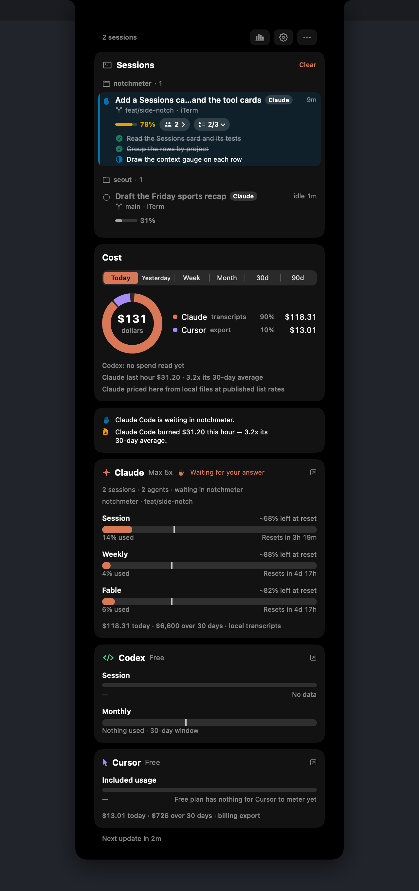

A Cursor usage tracker in the MacBook notch
Notchmeter shows Cursor's included plan usage and on-demand spend for the current billing cycle beside the notch, read the way cursor.com's own dashboard reads them, with a pace tick and the cycle's reset; the team pool and the Grok Bot weekly allowance where a seat has them; and the last 30 days of usage events with the cost Cursor itself put on each. Nothing is priced here, and nothing is signed into.
macOS 15 or later · Apple silicon or Intel · no account, ever
What Notchmeter shows for Cursor
The render on the right has Cursor on a free plan, which has nothing to meter and says so; a paid seat fills the same card.
- Included usage: the plan's allowance for the cycle as dollars used of the limit, with a pace tick and the cycle's reset; On-demand as dollars spent, against a limit where one is set.
- Team pooled and Team on-demand on a Teams plan, and Cursor models and Other models, Cursor's own two percentages, captioned metered apart from the included total because they are not shares of it.
- Grok Bot: the seven-day allowance a seat may have, or its trial, captioned as one.
- Today's spend, on a seat the summary meters nothing for: today's dollars from the export against your usual day. A comparison, so it paces but never runs out, warns or notifies.
- Cost: today, yesterday, the week, the month and 30 days, by model, every dollar the one Cursor put on that event; and the 30-day trend under the card.
- Sessions: with Cursor's hook, every running agent with its title and elapsed time, and a tick on the ring when a turn ends.

Where each figure comes from
Every window is one of cursor.com's own figures; the source is named on the card.
| Figure | Source | Notes |
|---|---|---|
| Included usage, On-demand, Team pooled, Cursor models, Other models | GET https://cursor.com/api/usage-summary (falling back to /api/usage on a request-metered plan, whose figure is Fast requests) | Undocumented dashboard endpoints; their shapes were taken from cursor.com's own traffic and are pinned by tests. |
| The cycle figures | POST /api/dashboard/get-current-period-usage, asked only on a seat the summary meters nothing for | The included ring is includedSpend / limit in cents, never Cursor's percentage fields. |
| Grok Bot | POST /api/dashboard/get-sand-usage-status | A window only where the seat has the allowance or a live trial; an expired trial is no window, never an empty bar. |
| Cost | POST /api/dashboard/get-filtered-usage-events: the last 30 days of usage events with Cursor's own cost on each. On by default; Also read Cursor's usage events switches it off | Day resolution, so Cursor reports no hour and never appears in a burn line; days older than 30 come from Notchmeter's own daily history, so the 90-day range is short until it has run that long. |
| Sessions | Cursor's hooks, through the optional hook command | Cursor documents no event that waits for you, so its ring never claims a wait; a turn quiet for 45 seconds with no command running is shown as a possible wait, labelled as Notchmeter's inference. |
The login is the editor's own access token in ~/Library/Application Support/Cursor/User/globalStorage/state.vscdb, sent to cursor.com as the WorkosCursorSessionToken cookie, the form the dashboard sends it in, with User-Agent: Notchmeter/<version> and, on the POSTs, the Origin: https://cursor.com the dashboard's own requests carry. It is read, never refreshed or stored.
When cursor.com answers the same question twice, the window is as spent as its furthest-along figure says: an Enterprise seat once read 55% by one field while the other said the whole allowance was gone, and the billing export showed on-demand charges in that same cycle. Under-reporting a spent window hides a meter that is charging money, which is the one thing this app exists to catch, so the other way to be wrong is the one chosen (When a vendor publishes two figures for one window).
Cursor's Terms of Service (effective 2026-09-03, read 2026-09-24) list “harvest, scrape, or extract data from the Service” among the things a user may not do. These are the dashboard's own reads of your own usage, made by a program rather than the browser; whether the clause reaches them is Cursor's to say, and if Cursor asks the project to stop, the meter is removed in the next release (If a vendor asks us to stop).
What it says to do about it
The Advice strip's lines for Cursor. Its main window is the billing cycle.
Questions
Which Cursor plans does it meter?
Any seat signed into the Cursor editor on this Mac: a Pro or Ultra seat's included usage and on-demand spend, a Teams plan's pool, an Enterprise seat including one billed on-demand (its cycle figures, or Today's spend where nothing is metered), and a request-metered legacy plan's fast requests. A free plan has nothing for Cursor to meter, and the card says exactly that rather than drawing an empty bar.
Why does the meter disagree with the percentage on cursor.com?
Because the ring is drawn from dollars, not from Cursor's percentage fields. Cursor staff have said those fields “reflect a different internal metric” and are “not calculated as a simple totalSpend / limit” (forum thread 168210, 2026-08-13), and between 2026-08-11 and 2026-08-17 they froze backend-side while the cents kept counting. The included ring is includedSpend over limit, the dollars are printed as the summary gave them, and where two figures disagree the window is as spent as the further-along one says. The reasoning is in docs/accuracy.md.
Does Notchmeter price my Cursor usage?
No. Every dollar on the Cursor row is the one Cursor itself put on that event in its usage export, which is why the row's source reads “billing export” rather than an estimate. A request or a model Cursor left unpriced stays unpriced. The export is day resolution and reaches back 30 days; anything older is what Notchmeter's own daily history has accumulated since it was installed.
Does it show when Cursor is waiting for me?
Not as a certainty. Cursor's hooks document no event that means the agent is asking you, so the Cursor ring shows the tick when a turn ends and the session count, and never the waiting dot. A turn that goes 45 seconds without activity and with no command running is shown as a possible wait, labelled as Notchmeter's inference rather than a Cursor event, and nothing of Cursor's can be answered from the notch.
Does it sign into Cursor or store my token?
No. It reads the access token the editor already keeps in its state database and sends it only to cursor.com, as the cookie the dashboard sends it in, in the same reads the dashboard makes. It is never refreshed, stored or forwarded, and switching it off under Settings › Assistants stops every request to cursor.com at once.
Is reading the dashboard endpoints allowed by Cursor's terms?
Cursor's Terms of Service (effective 2026-09-03, read 2026-09-24) forbid harvesting, scraping or extracting data from the Service. These are the dashboard's own reads of your own usage, made by a program rather than the browser; whether the clause reaches them is Cursor's to say. The commitment is written down: if Cursor asks the project to stop, the meter is removed in the next release, and the release notes say so. See docs/privacy.md.
Install it
macOS 15 Sequoia or later, Apple silicon or Intel. Signed, notarised, and it updates itself. Free forever, MIT licensed.
Notchmeter is a Mac app. There is no Windows or Linux version; if you want a Windows one, the Windows issue is where to say so. How every figure is built, with its source and its date: docs/accuracy.md.